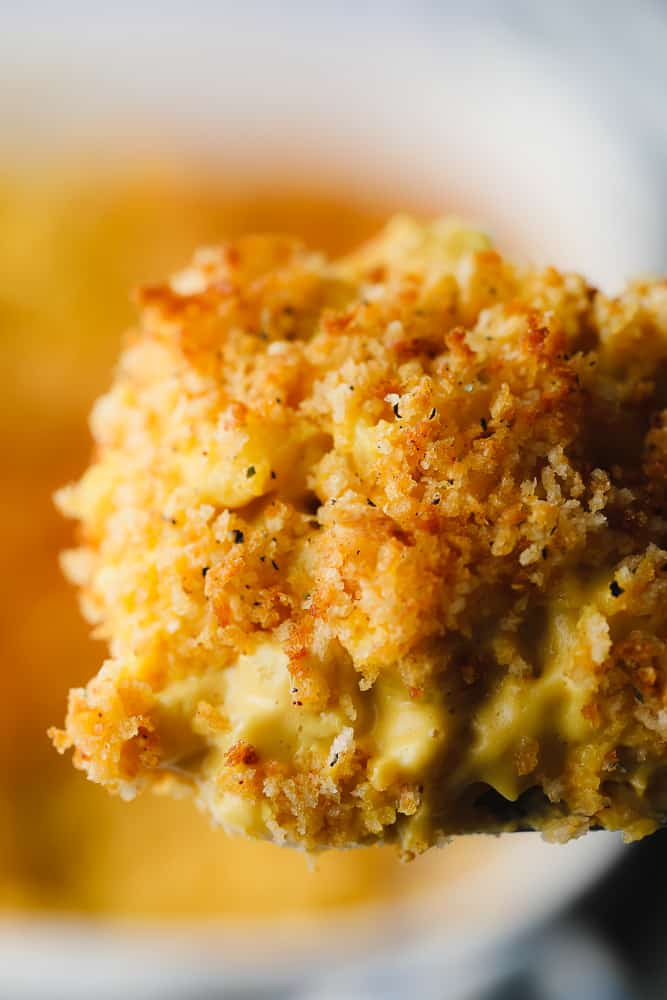

Mac-N-Cheese

The Best Vegan Mac and Cheese
This truly is the BEST Vegan Mac and Cheese and it's
easy to make!
The stovetop version is ready in less than 20 minutes,
or bake it for a few minutes with a buttery breadcrumb topping.
Irresistibly cheesy and creamy without a hint of dairy!
Ingredients
- Raw cashews
- Water
- Fresh Lemon juice
- Nutritional yeast
- Turmeric
- Garlic Powder
- Salt
- Vegan Cheese
- Elbow noodles
- Panko bread crumbs
- Vegan butter
- Smoked paprika
Steps
- Pour hot water over the cashews and let soak for 5 minuts
- Blend until very smooth
- Mix breadcrumbs butter and paprika in a small bowl
- Add drained noodles and pour in cheese sauce
- Sprinkle the breadcrumb topping over the top and bake for about 15 minutes
- Serve right away!